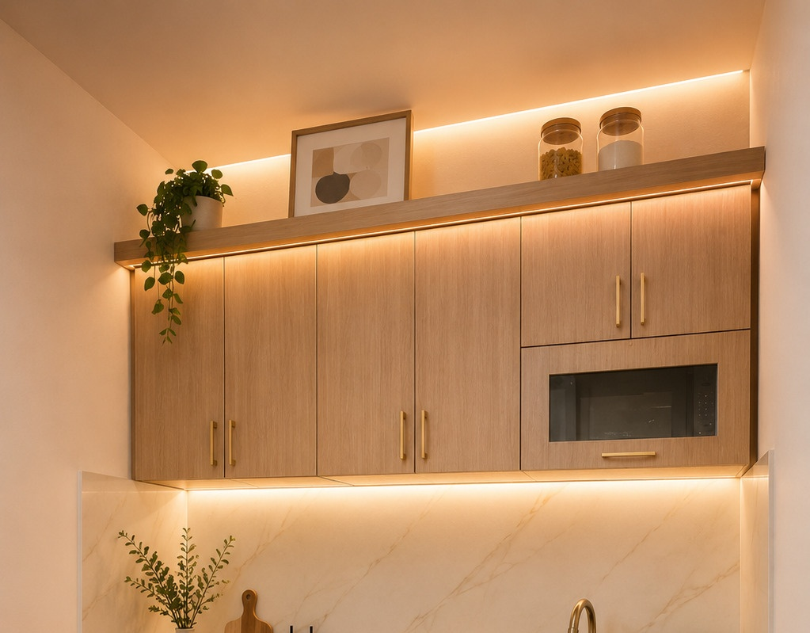

Komersil Mezanin 81 UnitType LAVENDER
36 / 60Inovasi ruang tumbuh dengan lantai mezanin aktif. Area atas dapat difungsikan sebagai ruang kerja pribadi, studio santai, atau kamar tidur tambahan.
Luas Bangunan / Tanah: 36 m² / 60 m² (6 x 10)
Lantai Mezanin: Tersedia (Lt. 2)
Daya Listrik: 1300 Watt
Kamar Tidur / Mandi: 2 Kamar / 1 KM